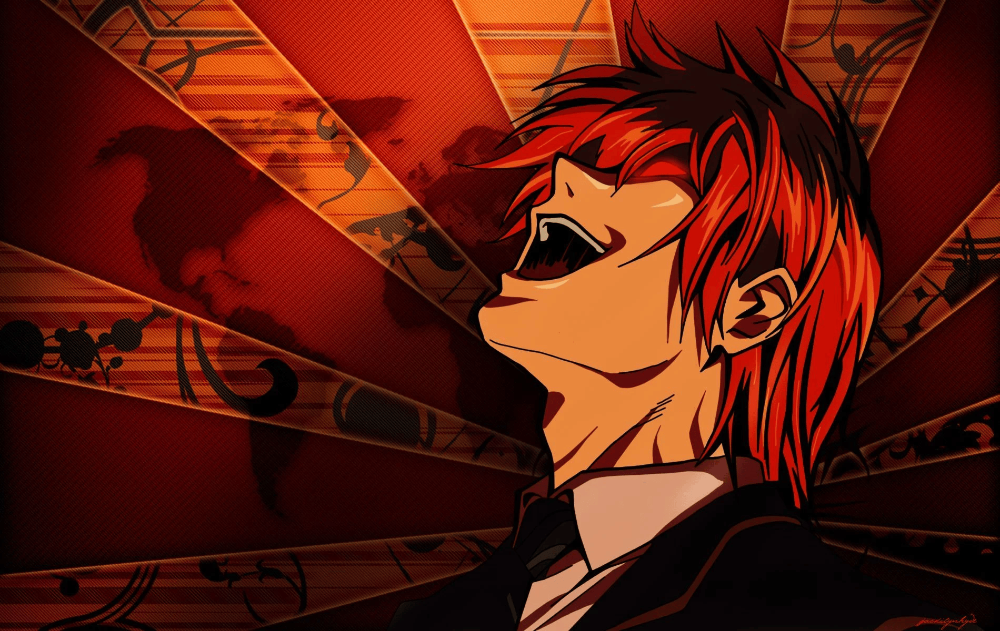

Kira (キラ) is the figure attributed with causing the epidemic heart attack deaths of criminals. The name Kira was created by the public in response to Light Yagami's initial use of the Death Note, and various members of the public view Kira as a god. Various Death Note users act as Kira, but their identities are unknown to the public so their actions are viewed as being committed by one entity. In the Kira investigation, several differences in methods of killing are profiled, so the groups that oppose Kira determine that more than one person is acting as Kira. The different Kiras are given nicknames to differentiate them.
